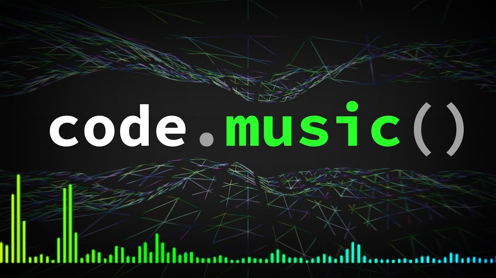

'Music and Code' I know this sound very different and you must be thinking there is mass difference between the Code and the Music. But today I want to tell you there are few similarities between these two trees.
There are several similarities between Music and Code According to Me are, the Musicians and Coder work with the few set of tools daily to create the desired outcome(product). The Musicians and the Coder both have to be innovative in their work. Musicians focus on dynamics, creative, scale(chord), and performance, similar to how programmers need to be exact in their code, syntax, structure, and program functionality. Musicians use notes and musical notation, while programmers utilize algorithms and coding languages. Additionally, Coder and Musicians require precision and attention to detail.
I personally find that listening to music while coding can enhance my productivity and focus(and I think 'It can help other coders also'). Music also help to create a conducive environment for problem-solving and concentration. According to me the Instrumental music, provide a non-distracting background that aids in maintaining the coding flow.
According to me who have a background in both music and coding often find that their musical training has positively influenced their approach to programming. The discipline, practice, and creativity involved in music can translate into the world of coding, providing a unique perspective and skill set.
The connection between music and code is multifaceted(having many sides), encompassing similarities in the creative process and the practical benefits of music for coding. Exploring this relationship can provide insights into how different disciplines can interconnected to each other. By delving(researching)into these aspects, a blog on the interconnection between music and code can offer valuable insights and practical tips for individuals interested in leveraging the potential synergies between these two domains.